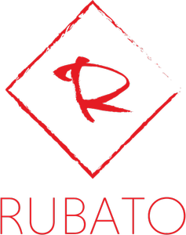

Home
Rubato is a Python game engine that builds off of PyGame to make a cleaner and more efficient game engine. We aim to make game development in Python much easier than it currently is. Even though we use PyGame in the backend, when using Rubato, you do not need to ever touch PyGame.
Rubato is a music term that indicates a phrase that should be performed expressively and freely. Our library is named this way because it allows developers to freely make games.
Repository: https://github.com/tinmarr/rubato
Warning
This library is still in it’s very alpha stages and will be very buggy!